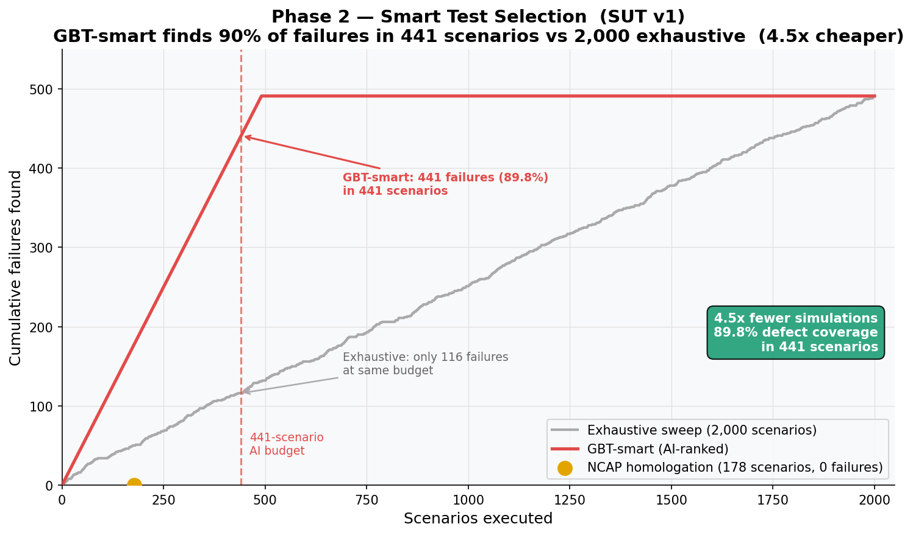
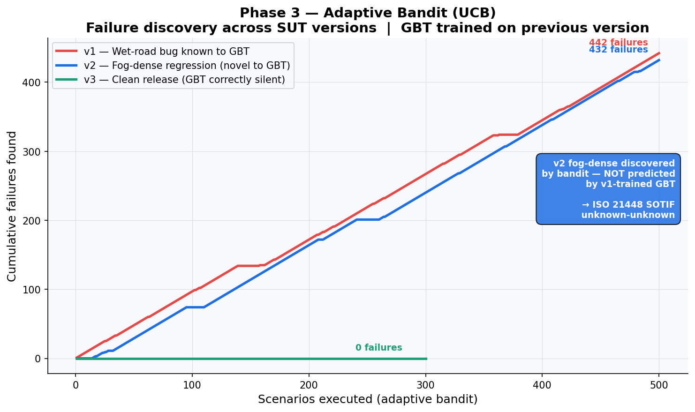
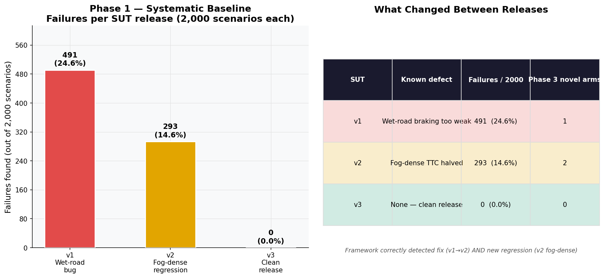

Euro NCAP homologation defines a fixed set of approximately 30 test scenarios on dry roads at prescribed speeds. These tests are designed to certify a system, not to find where it fails. In practice, AEB software regressions frequently occur in parameter regions outside the homologation envelope: different weather conditions, unusual closing speeds, or edge-case overlaps that no fixed test plan anticipates.
Two questions motivate this framework:
A parametric variation engine generates concrete scenarios by Cartesian product across
six dimensions: ego speed (20-100 km/h), target speed, lateral overlap, weather condition,
time of day, and road surface. Scenarios are filtered for physical plausibility and executed
in SUMO via TraCI. The SUT controller applies AEB logic each timestep; the NCAP evaluator
assigns a 0-4 score and a binary label_critical flag.
Output: 2,000 labelled scenarios per SUT version, stored in SQLite. Forms the training dataset for Phase 2.
A Gradient Boosted Trees classifier is trained on Phase 1 results to predict failure probability for any scenario parameter combination. Scenarios are then ranked by predicted risk. The SmartSelector applies a coverage guard (at least one scenario per NCAP family) before filling the remaining budget by rank.
SHAP feature importance identifies which parameters drive failures, giving engineers a direct root-cause signal alongside the test results.
Output: Ranked test suite. 441 scenarios capture 89.8% of all v1 defects. 4.5x reduction in simulation cost versus exhaustive sweep.
When a new SUT version ships, the Phase 2 model provides prior knowledge about the previous version. A UCB multi-armed bandit (25 arms: 5 speed buckets x 5 weather conditions) is warm-started from these priors and deployed against the new release.
The bandit exploits known failure regions immediately. When those arms stop producing failures (because the bug was fixed), UCB exploration bonus forces the agent toward under-tested arms. A one-shot novelty reward fires on the first failure per arm, preventing over-exploitation of a single region and ensuring genuine exploration.
Output: Novel failure arms discovered (unknown-unknowns); learning curve showing cumulative failures over scenarios executed. Directly generates ISO 21448 SOTIF evidence.
| SUT Version | Known Defect | Scenarios | Failures | Failure Rate | Mean NCAP |
|---|---|---|---|---|---|
| v1 | Wet-road braking compensation bug | 2,000 | 491 | 24.6% | 3.02 |
| v2 | Fog-dense sensor regression (introduced fixing v1) | 2,000 | 293 | 14.6% | 3.41 |
| v3 | Clean release | 2,000 | 0 | 0.0% | 4.00 |
| Approach | Scenarios Run | Failures Found | Defect Coverage | Note |
|---|---|---|---|---|
| Exhaustive sweep | 2,000 | 491 | 100% | Baseline |
| NCAP homologation (dry, fixed speeds) | 178 | 0 | 0% | Certifies; does not find bugs |
| GBT-smart (AI-ranked) | 441 | 441 | 89.8% | 4.5x cheaper than exhaustive |

| SUT Probed | GBT Trained On | Scenarios | Known Failures | Novel Arms | Interpretation |
|---|---|---|---|---|---|
| v1 | v1 | 500 | 441 | 1 | Bandit confirms known wet/snow regions |
| v2 | v1 | 500 | 61 | 2 | Fix confirmed (441 to 61 drop) + fog regression discovered |
| v3 | v2 | 300 | 0 | 0 | Clean release - framework correctly silent |


| Module | Responsibility | Integration Point |
|---|---|---|
| VariationEngine | Cartesian product scenario generation with implausibility filter | Config YAML |
| SumoWriter | Generates .net.xml and .rou.xml per scenario | OpenSCENARIO export path ready |
| SUMORunner | TraCI batch loop, idempotent (skips existing results) | Replace SUMO with CarMaker / CARLA |
| SUTController | AEB logic per timestep; FMI 2.0 integration seam | Override step() for real V-ECU |
| NCAPEvaluator | 0-4 NCAP points + label_critical per scenario | Extend for R157 / custom regulations |
| CriticalityModel | GBT classifier + SHAP importance | Swap for XGBoost / neural surrogate |
| SmartSelector | Coverage guard + top-K exploitation + diversity fill | Tune budget per programme gate |
| BanditAgent | UCB warm-started from GBT; one-shot novelty reward | Extend with BO within each arm (Phase 4) |
| Area | Current State | Production Path |
|---|---|---|
| Weather physics | Friction multiplier applied manually in SUT controller | Connect to sensor simulation layer (dSPACE AURELION, AVL) |
| SUT model | Parametric rule-based; not a real ECU | FMI 2.0 co-simulation with V-ECU (interface pre-wired) |
| Bandit resolution | 25 discrete arms; finds region, not exact threshold | Bayesian Optimisation within each arm (Phase 4) |
| Traffic model | Ego + single target on straight 500m road | Cut-ins, density, curved road via SUMO network generator |
| Sensor model | Ground-truth distance/speed from TraCI, no noise | Sensor simulation integration |
| HIL validation | SIL only; FMI 2.0 port untested on hardware | Test bench integration |
| NCAP scoring | Simplified; partial credit and full VRU not complete | Full protocol implementation |
| Phase | Capability | Value |
|---|---|---|
| v1 (this POC) | Weather-based parameter space, discrete arms, SUMO SIL | Pipeline architecture validated, methodology proven |
| v2 | Kinematic parameter space (decel profiles, cut-ins, curvature), BO within arms | Real physics, exact failure thresholds, no synthetic weather proxy |
| v3 | FMI 2.0 real V-ECU, sensor simulation backend, HIL validation | Production-grade integration, full ISO 26262 / 21448 artefact chain |
| v4 | L3/L4 multi-agent parameter space, learned world model for exploration | 20-30 dimensional ODD coverage - the problem brute force cannot solve |
This POC demonstrates a three-phase AI-augmented validation pipeline that addresses two structural gaps in current ADAS test practice: simulation budget efficiency and SOTIF unknown-unknown coverage.
Phase 2 reduces the regression test suite from 2,000 to 441 scenarios while maintaining 89.8% defect coverage - a 4.5x cost reduction achieved without dropping any NCAP family from the test plan.
Phase 3 detects the fog-dense regression in SUT v2 within 500 adaptive scenarios, despite that failure mode being entirely absent from the v1 training data. The same agent correctly produces no findings on the clean v3 release.
The architecture is simulator-agnostic and SUT-agnostic by design. The ML layer does not change when the simulation backend or the ECU under test changes. That separation is the foundation for extending this methodology from L2 AEB to L3/L4 validation programmes, where intelligent exploration is not an optimisation but a requirement.